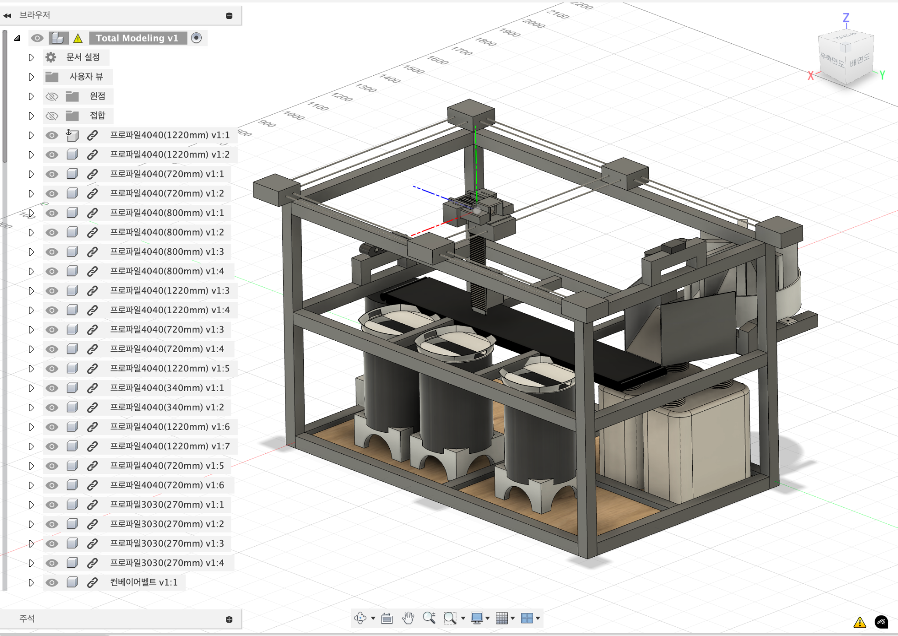
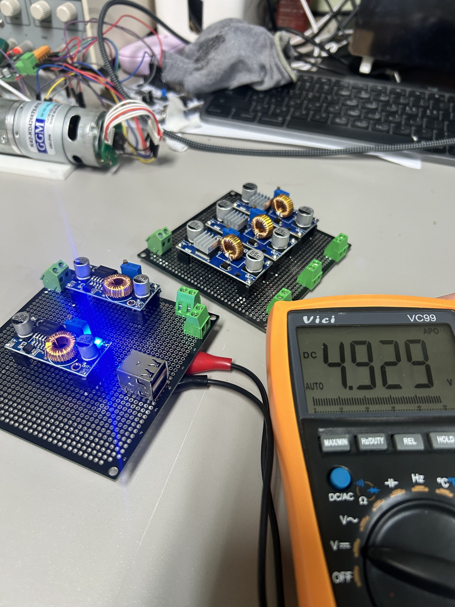
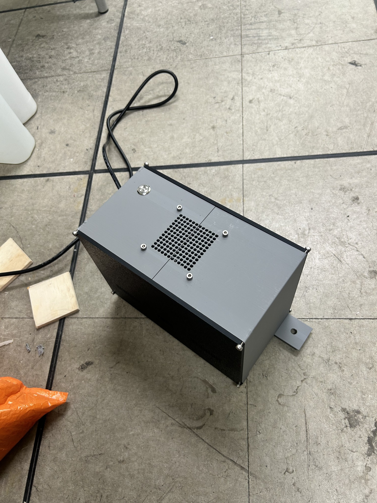
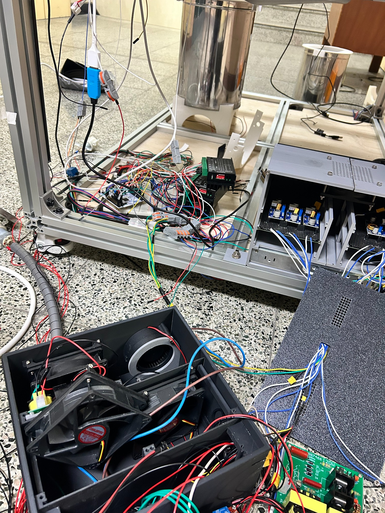
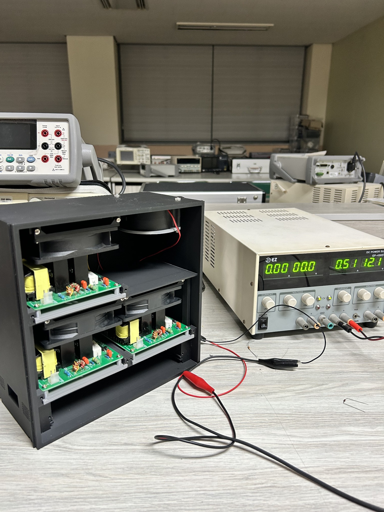
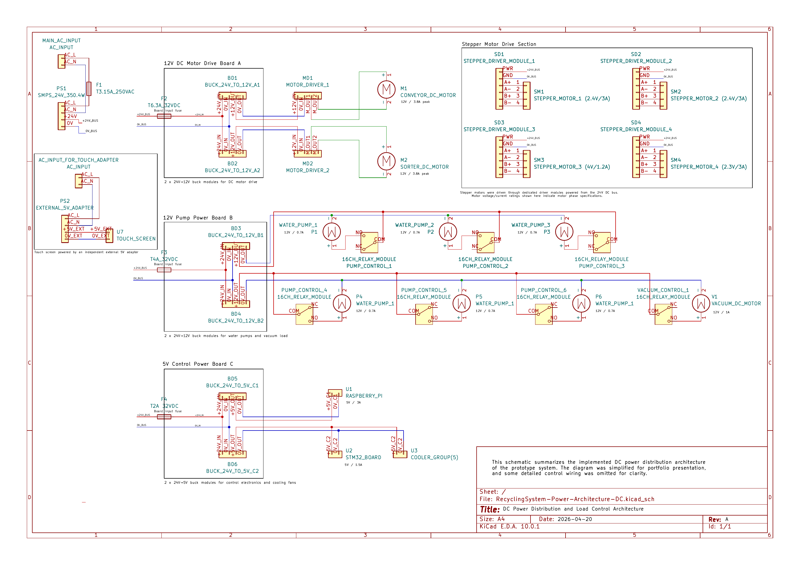
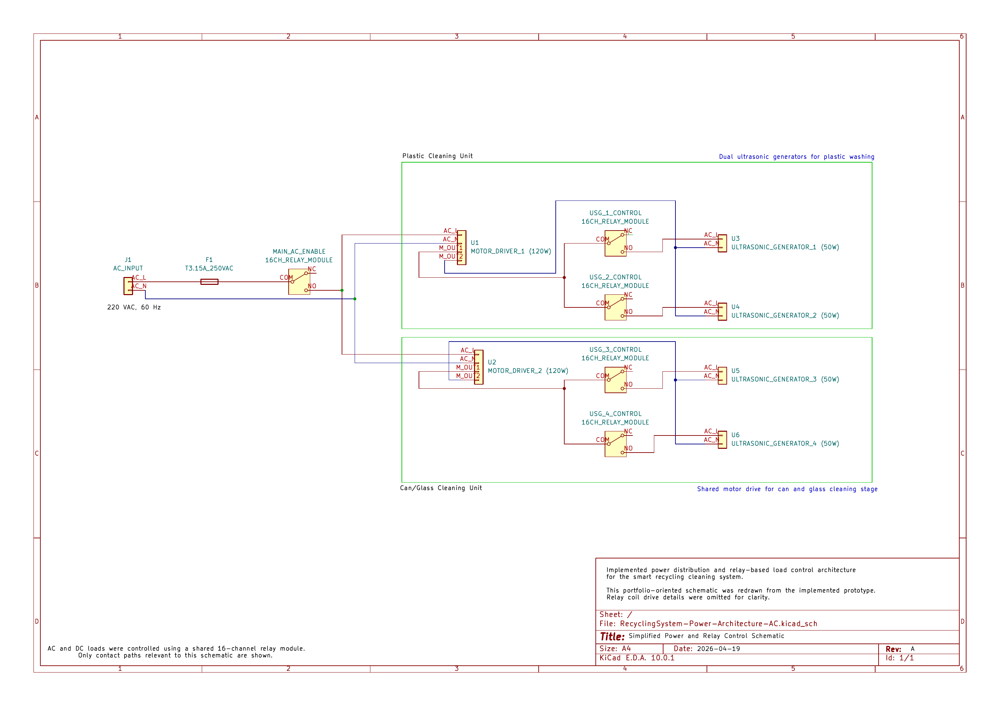
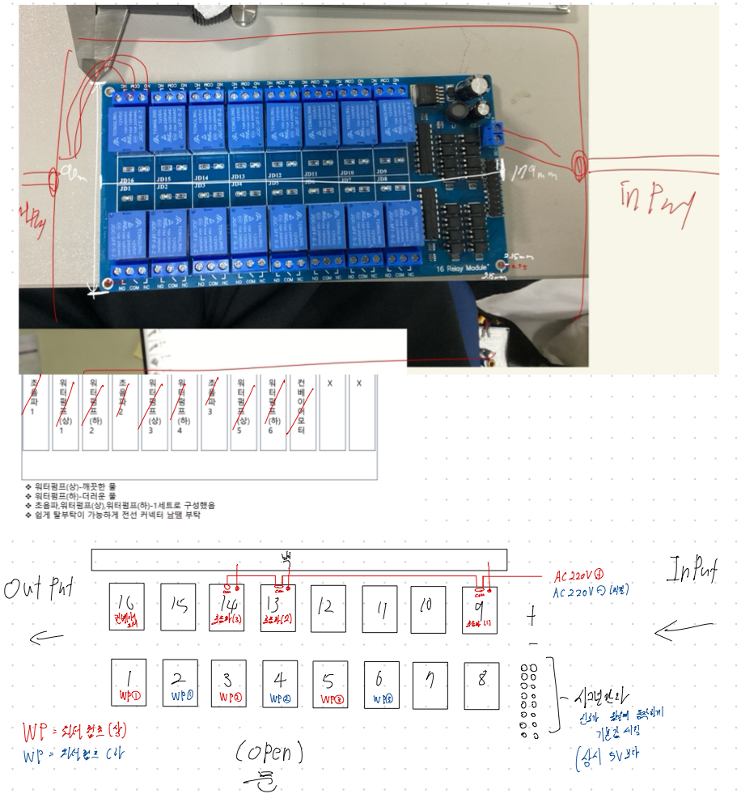
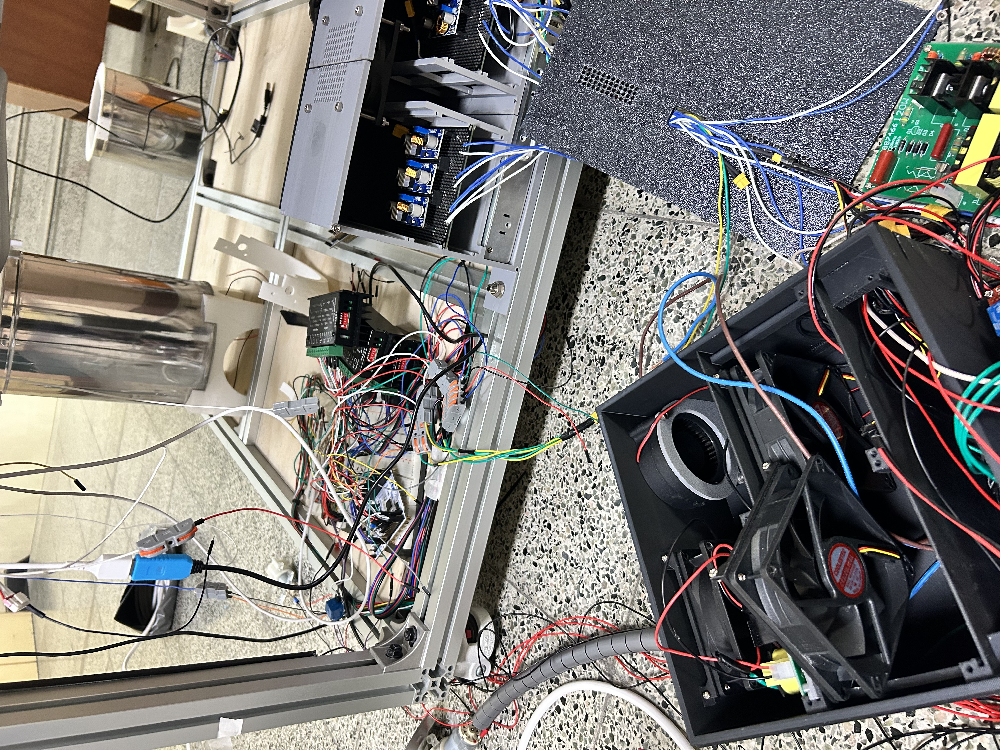

PROJECT 01 · 스마트 분리수거 자동화 시스템PROJECT 01 · Smart Recycling Automation System
주요 작업 · 전원 분배, 모터 구동부 연결 및 장비 시험
Featured case · Power distribution and motor drive integration in an automated system
자동 분류부터 세척까지 연결한 분리수거 장비
Built an automated recycling, sorting and cleaning prototype
4명이 함께 제작한 자동 분리수거 시제품임. 컨베이어로 물체를 옮기고 영상 인식과 로봇 구동부를 이용해 분류한 뒤 세척하는 구조임. 전원 구성과 배선, 컨베이어 및 세척 장치의 제작·시험을 주로 담당.
A four-person prototype combining conveyor transport, object sorting, robotic motion, and cleaning. Team members divided responsibilities across vision, motion, power, and fabrication.
전원 구성과 장비 제작·시험
Power integration, fabrication and testing
- 24V 주전원을 장치별 12V·5V 전원으로 나누어 공급
- DC 모터와 펌프 등 구동부의 전원 연결·배선 구성
- 컨베이어 모터 PID 실험 및 기구 부품 설계·조립
- 구동 중 발생한 문제 점검 및 재시험
- Distributed a 24V supply into 12V and 5V paths
- Integrated power and wiring for DC motors and other loads
- Tested conveyor motor PID and designed/assembled mechanical parts
- Checked faults and retested equipment
전원을 연결하고, 함께 구동하며 확인
Integrated and tested the system
- 각 장치에 필요한 전압을 확인하고 전원 경로 구성
- DC 모터·제어부·기타 장치를 연결해 조립
- 개별 구동과 전체 장비 구동을 반복 확인
- DC-DC 컨버터 파손 발생 → 전원 분배 방식 수정
- Checked voltage requirements and planned power paths
- Connected motors, controller and other loads
- Tested individual loads and the assembled system
- Responded to a failed DC-DC converter by reallocating supply paths
DC-DC 컨버터 파손 후 전원 분배 방식 변경
처음에는 DC 모터와 다른 12V 장치에 같은 컨버터를 사용함. 구동 중 컨버터가 파손돼 모터의 전류 특성과 부하 연결 방식을 다시 확인. 이후 모터별로 컨버터를 분리하고 다른 장치의 전원 연결도 조정.
Dedicated power paths for DC motor loads
Initially, DC motors shared a 12V DC-DC converter with other loads. After converter failure, I reviewed load allocation, assigned dedicated 12V conversion paths to the motors, and redistributed other loads.
DC 모터와 다른 12V 장치를 한 컨버터에 연결해 사용하던 중 컨버터가 파손. 가변 DC 파워서플라이로 모터를 따로 구동해 전류 변화와 전압 강하를 살펴봤고, 이후 모터마다 전용 컨버터를 배정.
A 12V converter initially powered a DC motor alongside other devices. After failure, I identified insufficient allowance for motor startup/transient demand and shared loads as a plausible design weakness, then assigned dedicated converters to motors and separated other loads. The exact physical failure mechanism was not measured or proven.
기술 요소
Technical Elements
- STM32, C, Fusion 360, KiCad
- 로봇 시스템 구조 설계 및 제어부 통합
- Timer 기반 PWM 모터 구동
- Encoder 기반 속도 측정 및 PID 테스트
- Relay 기반 AC 220V 부하 분리 제어
- DC 24V → 12V/5V 전력 분배 설계
- 부하 특성 검토 및 전원 분배 경로 변경
- STM32, C, Fusion 360, KiCad
- Robot system architecture design and controller integration
- Timer-based PWM motor drive
- Encoder-based speed measurement and PID testing
- Relay-based isolation control for AC 220V loads
- DC 24V → 12V/5V power distribution design
- Load review and power distribution reconfiguration
성과
Achievements
- [교내] 창업지적재산권 페스티벌 장려상
- 특허 출원
- [교외] 한국정보기술학회 추계종합학술대회 동상
- [교내] 캡스톤디자인 경진대회 특별상
- [Campus] Entrepreneurship/IP Festival — Encouragement Award
- Patent application filed
- [External] KIIT Fall Conference — Bronze Award
- [Campus] Capstone Design Competition — Special Award
문제 해결 01 · DC 모터 전원 분리
Power case — Dedicated DC motor supply paths
왜 컨버터를 따로 나눴을까?
Why separate the converters?
12V 5A 컨버터를 여러 장치가 함께 사용하던 중 파손이 발생. 이후 모터를 별도로 시험하며 구동 시 전류 증가와 전압 강하를 확인.
A DC motor shared a 12V/5A converter with other loads. The converter failed during operation; the motor's normal current was below 2A.
모터는 기동하거나 부하가 달라질 때 전류가 크게 변할 수 있음. 다른 장치와 전원을 공유하면 이런 변화에 대응할 여유가 부족할 수 있다고 판단.
Startup and changing mechanical loads can increase motor current. Sharing a converter with other loads reduces available headroom.
모터별로 12V 컨버터를 분리하고 나머지 장치의 전원 연결도 조정. 한 장치의 부하 변화가 다른 장치에 미치는 영향을 줄이도록 전원 경로 분리.
Dedicated 12V converters were assigned to DC motors, with other 12V loads moved to separate paths to reduce shared-load interactions.
당시 조치와 추가로 확인할 항목
Original engineering decisions and what I would improve
실제로 수정한 내용과, 다시 시험한다면 확인할 항목을 나누어 정리.
Implemented work and proposed improvements are separated. The improvements below were not performed during the original project.
DC 모터 전원을 따로 분리
Reallocated power paths
모터를 단독 구동해 전류와 전압 변화를 확인한 뒤, 모터별 컨버터를 분리. 다른 12V 장치의 전원 연결도 바꾸고 장비를 다시 시험.
After a converter failed in a shared 12V load configuration, I assigned dedicated DC-DC paths to DC motors, redistributed other loads, and retested the system.
전류·전압 변화 기록과 용량 검증 강화
Measured sizing and protection verification
다시 시험한다면 모터 기동 전류와 12V 출력 전압의 변화를 파형으로 기록 필요. 모든 장치를 동시에 구동했을 때 컨버터의 전류·발열 여유와 보호 기능도 확인 예정.
I would measure startup/steady-state current and voltage sag, verify peak-load and thermal margins and protection behavior, and document load budgets and repeatable test conditions.
문제 해결 02 · 컨베이어 모터 센서 불량
Issue 2 — Encoder Sensor Failure in the Conveyor Motor
Evidence
Evidence
실제 제작·계측·세척 시험 자료
사진과 도면은 클릭하면 크게 볼 수 있음.





DC 모터 전원·구동 시험 기록
초음파 세척 구동 및 세척 결과 (약 1분)
커피 찌꺼기와 연유, 흑당을 섞어 오염물을 만들고 2일간 건조한 뒤 세척 시험을 진행. 초음파 세척기를 약 1분간 가동했고, 영상에는 구동 모습과 세척 후 상태를 수록.
전원 분배·릴레이 구성도
제작 당시 사용한 시판 DC-DC 모듈과 릴레이의 연결 관계를 도면으로 정리.




장비 작동 및 별도 모터 제어 실험
스마트 분리수거 장치 분류 동작 시연 (팀 프로젝트)
별도 STM32 모터 PID 실험 영상 2개 보기
STM32와 별도 엔코더 모터로 진행한 PID 제어 실험임. 분리수거 장비의 컨베이어는 엔코더 문제로 PWM·시간 기반으로 구동.
STM32 모터 PID 제어 실험 (목표 100 rpm)
STM32 엔코더 모터 제어 실험